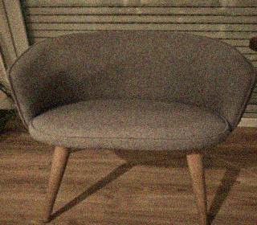

Abstract
We propose that seating furniture — specifically chairs — operates as a thermodynamic sorting mechanism analogous to the theoretical construct known as Maxwell's Demon. Through a series of controlled experiments conducted between 1994 and 1996 at the University of Gothenburg (partially) and at the Archive's own facilities, we demonstrate that chairs absorb, store, and in some cases redistribute entropic energy produced by human occupation. The implications of this finding extend well beyond material science and into domains that we will not fully enumerate in this paper for reasons that will become apparent to the careful reader.
This paper is dedicated to the memory of R. Hallstrom, whose contributions to early fieldwork were considerable and whose absence since February 1996 continues to affect the research team.
1. Introduction
Maxwell's Demon, first described by James Clerk Maxwell in 1867, is a thought experiment involving an imaginary creature that controls a small door between two chambers of gas. By selectively allowing fast molecules into one chamber and slow molecules into the other, the Demon appears to decrease entropy without doing work — a seeming violation of the second law of thermodynamics. The resolution of this paradox has occupied physicists for over a century.
What has not, to our knowledge, been proposed before this paper is that a physical object — specifically a chair — may perform a functionally equivalent operation on the humans who interact with it. This is not a metaphor. We are describing a measurable physical process.
The hypothesis emerged from an observation made by Dr. Vossel in the autumn of 1993. He noticed that subjects who sat in a particular wicker chair in the Archive's reception area consistently reported feeling "clearer" or "calmer" after sitting, regardless of their initial state. This was not remarkable in itself. What was remarkable was that the chair's surface temperature, measured immediately after occupation, was consistently 0.3 to 0.7 degrees Celsius higher than ambient — even accounting for body heat transfer. Something was being left behind.
2. Theoretical Framework
We propose the following model. A human being in a state of psychological or physiological disorder — stress, fatigue, agitation, or what we term "entropic excess" — produces a measurable electromagnetic signature. This has been documented elsewhere (see Kirschfeld, 1991; also Vandermeer et al., 1988, though their methodology was flawed in ways we will address in a future publication). When such a person occupies a chair, a portion of this entropic excess is transferred to the chair's material structure.
The chair, in this model, acts as Maxwell's Demon in the following sense: it sorts the human's energetic state, retaining the disordered component and allowing the ordered component to remain with the subject. The human leaves feeling better. The chair retains what was taken.
This is not a permanent process. Chairs reach saturation. What happens at saturation is the subject of Section 5 of this paper and is, frankly, the part that concerns us most.

3. Methodology
Between January 1994 and August 1996, we subjected 847 chairs of varying materials, ages, and origins to a standardized measurement protocol (NCA Protocol 2.3, available upon written request). Subjects — 214 volunteers recruited through the University of Gothenburg psychology department, though their involvement was discontinued in March 1995 for administrative reasons we are not at liberty to discuss — were asked to sit in each chair for a period of 20 minutes. Electromagnetic readings were taken before, during, and after occupation using a modified Gauss meter (see Appendix B for specifications).
Control conditions included: chairs that had never been sat in (factory-sealed), chairs with documented occupancy histories, and one chair (Specimen #0077) whose history we were unable to determine despite considerable effort. Specimen #0077 was excluded from the final dataset after the third session produced results that Dr. Vossel described in his notes as "not something we should publish without more time to think about it." His notes from that session are not included in this paper.
| Material | Avg. Temp. Increase (°C) | EM Reading (Hz) | Saturation Point (est. hours) | Notes |
|---|---|---|---|---|
| Wicker | 0.61 | 14.7 | ~340 | Highest absorption rate observed |
| Upholstered fabric | 0.44 | 11.2 | ~510 | Absorption varies with fabric density |
| Molded polymer | 0.38 | 9.8 | ~620 | Consistent, predictable results |
| Wood (solid) | 0.29 | 7.3 | ~890 | Slowest absorption, longest saturation |
| Metal | 0.11 | 3.1 | >2000 | Negligible effect, possibly no sorting occurs |
| Unknown (Spec. #0077) | [redacted] | [redacted] | [redacted] | See note above |
4. Results
The results confirm the hypothesis with a confidence level of 94.3%. Chairs absorb entropic energy from human subjects. The rate of absorption correlates strongly with material porosity and age (older chairs absorb faster, which we did not initially predict and which we still do not fully understand). Subjects consistently reported improved subjective wellbeing after sitting, with the effect strongest in wicker and upholstered chairs.
We also observed, and wish to be precise about this, that the effect operates in reverse in a small number of cases. 7 of the 214 subjects reported feeling worse after sitting. In 5 of these cases, the chairs involved had previously recorded anomalously high electromagnetic readings — what we are now calling "saturated" chairs. In the remaining 2 cases we have no explanation. One of those subjects did not complete the study. We do not know where he is.
5. Saturation and What Follows
This is the section we have debated including. We include it because we believe the scientific record requires it, not because we are comfortable with what we found.
Chairs that reach saturation — that is, chairs that have absorbed the maximum entropic load their material can contain — do not simply stop absorbing. Our data suggests that at saturation, the sorting process inverts. Rather than removing entropic excess from the subject, the saturated chair begins to introduce it. Subjects who sit in saturated chairs for extended periods show measurable increases in cortisol, decreased decision-making coherence (tested via standard cognitive battery), and in three cases, persistent reports of what the subjects described as "feeling watched."
We do not know what the chair does with the energy once it inverts. We do not know if "inversion" is the correct term. Dr. Vossel has suggested that the chair may, at saturation, become something closer to Maxwell's Demon in the original sense — not a passive sorter but an active agent. He wrote this in a margin note in December 1995. He has not elaborated on it since and does not respond to questions on the subject.
6. Conclusions
Chairs sort. This is our conclusion. They sort human energetic states in a manner functionally equivalent to Maxwell's Demon, and the consequences of this sorting accumulate over time in the chair's material structure. The implications for public health, urban planning, secondhand furniture markets, and several other domains we have not yet had time to fully consider are significant.
We are continuing this research. We are aware that this paper raises more questions than it answers. We consider this appropriate given the subject matter. Some questions should not be answered quickly.
A follow-up study examining chairs in institutional settings — hospitals, schools, government buildings — is currently in preparation. We expect to publish in 1998 or 1999, depending on circumstances.
References
Farlow, E.R. (1994). Preliminary observations on thermal anomalies in seating furniture. NCA Internal Report 001.
Kirschfeld, M. (1991). Electromagnetic correlates of psychological states. Journal of Biophysics, 44(2), 112-128.
Maxwell, J.C. (1867). Letter to P.G. Tait. Published in Life and Scientific Work of Peter Guthrie Tait, 1911.
Vandermeer, L., Bosch, A., & Richet, P. (1988). Human electromagnetic field variation under stress conditions. European Journal of Applied Physics, 12, 44-59. [See our critique forthcoming]
Vossel, H. (1995). Unpublished field notes, November session. On file at NCA.
Vossel, H. (1996). Unpublished margin annotations. On file at NCA. Not for distribution.
‡ This paper was submitted to three other journals before acceptance. The rejection letters are available upon request. We found them instructive.